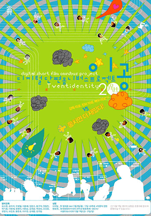
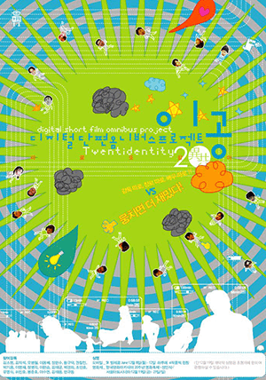
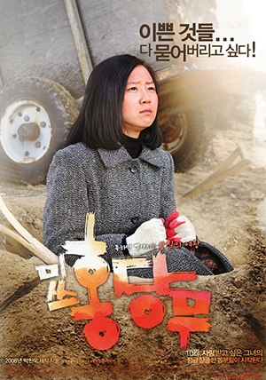
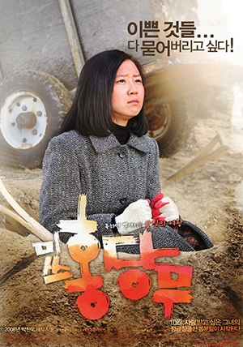

FILMOGRAPHY
필모그래피
| '94 | |
|---|---|
| '97 | |
| '99 | |
| '00 | |
| '02 | |
| '03 | |
| '04 | |
| '05 | |
| '06 | |
| '08 | |
| '09 | |
| '11 | |
| '13 | |
| '14 | |
| '17 | |
| '19 |


| '94 | |
|---|---|
| '97 | |
| '99 | |
| '00 | |
| '02 | |
| '03 | |
| '04 | |
| '05 | |
| '06 | |
| '08 | |
| '09 | |
| '11 | |
| '13 | |
| '14 | |
| '17 | |
| '19 |
어느새 무감각한 도구로 전락해버린 인텔리의 일상.
Incoherence, 1994
코미디 | 한국 | 31분 | 봉준호 | 유연수(episode 1 - 김 교수), 윤일주(episode 2 - 논설위원), 김뢰하(episode 3 - 변 검사)
도색잡지를 즐겨보는 교수 (에피소드 1 - 바퀴벌레), 아침운동을 하면서 남의 문앞에 놓여있는 우유를 습관적으로 훔쳐먹는 신문사 논설위원 (에피소드 2 - 골목 밖으로), 만취해 길가에서 용변을 누려다가 경비원에게 들키게 되는 엘리트 검사 (에피소드 3 - 고통의 밤), 이들 세사람이 TV프로그램에 출연하여 사회문제에 관한 대담을 나눈다 (에필로그). (An editorial writer who habitually steals milk as he goes for his morning jog, an elite prosecutor who is caught by an security guard as he was about to urinate on the street, drunk, and a university professor who enjoys pornographic magazines, get together on a television program to discuss social issues.)
제20회 독립영화 정기발표회.
촬영 봉준호
감독 장준환
나는 내가 존 레논이라고 믿는다. 하지만 세상 사람들은 나의 음악성을 알아주지 않는다. 어느날 요코를 보고 사랑하게 되지만 여자는 나의 비천함을 알고는 떠나버린다. 그녀가 떠나 버린 후 나는 누군가를 죽이려한다는 과대방상에 시달리게 된다.


각본 봉준호
스릴러 | 한국 | 103분 | 1999 .07.31 | 감독 민병천 | 배우 최민수(202), 정우성(431), 윤주상(함장) | 12세 관람가
한반도 최초의 핵잠수함 '유령' - 한반도의 운명을 결정한다!
해군 엘리트 장교 이찬석(정우성 분)은 제14차 한미합동 훈련 중 자신의 상관이자 잠수함 장보고의 함장인 이태준을 살해한다. 군사 재판에서 사형을 언도받고 총살형에 당한다. 상처의 고통으로 눈을 뜬 찬석은 자신이 아직 죽지 않았음을 깨닫는다. 명찰 대신 202(최민수)라는 번호표를 단 장교는 찬석의 주민등록증과 가족사진을 태우고 병실을 나간다. 어딘지 알 수도 없는 그곳을 탈출하려던 찬석은 비밀도크에 도착하고 물 위로 경외롭게 부상해 있는 핵잠수함 한 척을 발견한다. 그때, 202가 나타나 죽음과 출항 중 하나를 선택하라는 말을 남긴다. 찬석은 그곳에서 탈출이 불가능함을 깨닫는다.
미사일 유니트로 배치된 찬석은 같은 유니트 432(설경구 분)로부터 핵잠수함 ‘유령’의 경과 보고를 받는다. 유령은 구 소련의 차관 대신 받아들인 시에라급 핵잠수함으로 일본의 핵잠수함 개발에 대응하는 조치이다. 잠수함 유령의 존재는 물론 승조원들까지 모두 일급비밀에 해당한다. 미국, 중국, 러시아, 일본 등 한반도를 둘러싼 열강들은 한국이 핵을 보유하는 것을 허락하지 않을 뿐 아니라 저지할 것이 분명하기 때문이다. 핵잠수함 유령의 승조원들은 모두 주민등록상에서 사망자로 처리된 사람들이다. 하지만 그들은 아직 죽지 못한 말 그대로 유령들이다. 이전의 기록들은 모두 말소되었으며, 함내에서 개인적인 것들은 언급하지 못할 뿐 아니라 이름조차 사용할 수 없다. 그들은 단지 번호로 불릴 뿐이다. 모든 것이 베일에 싸인 듯한 느낌 속에서 찬석은 대한민국 최초의 핵잠수함 유령의 출항을 준비한다. 함장은 이번 작전의 구체적인 사항을 장교들에게도 알리지 않는다. 쓰시마 해협을 눈 앞에 두고 함장은 본부와의 통신을 끊는다. 202의 날카로운 눈빛이 발하는 가운데, 수병들은 동요를 일으키고 함 내는 묘한 긴장감이 감돈다. 지나치게 공격적인 부함장을 달가와하지 않던 함장은 찬석이 부함장 202와 껄끄러운 관계임을 알고 자신에게 주어진 핵미사일 발사 열쇠를 건넨다. 이해할 수 없는 함장의 행동에 당황하는 찬석. 자신이 알지 못하는 일이 벌어지고 있음을 느낀다.
부함장 202는 이미 계획된 대로 자신을 따르는 수병들을 중심으로 반란을 일으키고 함장을 살해한다. 그러나 그가 노리는 핵미사일 발사 열쇠는 확보하지 못한다. 그는 미사일 유니트의 찬석을 의심하고 찬석 역시 함내 분위기가 심상치 않음을 느끼고 사령실로 들어간다. 부함장 202는 찬석에게 함장을 살해했음을 밝히고, 강대국의 꼭두각시에 불과한 한국 정부에 분노를 토로한다. 그리고 일본에 대한 공격 계획을 알려주며 찬석에게 핵미사일 발사 열쇠를 요구하지만, 찬석은 이미 열쇠를 숨긴 상태. 긴장감이 극에 달하는 가운데 일본 잠수함이 접근해 온다. 202는 일본 잠수함에게 어뢰를 발사함으로써 공격 태세를 취하고, 찬석이 숨긴 핵잠수함 열쇠를 찾기 위해 총력을 다한다. 이때, 일본 잠수함 2대가 공격을 가해 오고 찬석은 이 틈을 타 202의 광기에 대한 반격을 시작하는데.
드라마, 코미디 | 한국 | 108분 | 2000 .02.19 개봉 | [국내] 12세 관람가
감독 봉준호 | 출연 이성재(고윤주), 배두나(박현남)
2000년대의 상상력! 2000년대의 코메디!
조용한 중산층 아파트, 백수와 다름없는 시간강사 고윤주(이성재 분)는 개소리에 괜히 예민해져서 방바닥에 엎드려서 소리를 들어보고 천장에서 소리를 들어보려고 하지만 개소리의 진원지를 알지 못한다. 할 수 없이 평소대로 버려도 아무도 안주워갈 슬리퍼에 츄리닝을 입고 밖으로 나가 분리수거를 하고 터덜거리며 들어오던 중 바로 옆집 문앞에 서 있는 강아지를 발견한다. 윤주는 그 개를 납치, 지하실로 뛰기 시작한다. 차마 죽이지는 못하고 지하실에 가둬버리는 윤주.
한편 아파트 경비실엔 경리 직원 박현남(배두나 분)이 있다. 그날도 지루하게 낱말맞추기나 하고 있는 현남에게 꼬마 슬기가 삔돌이를 찾는 전단을 가지고 온다. 온 동네에 전단을 붙이는 현남. 어쩌면 교수가 될 수도 있다는 희망적인 소식을 안고 한잔한 윤주. 집에 돌아와 임신한 아내의 배에 대고 속삭이고 있는데, 강아지 짖는 소리가 들린다. 급하게 달려나간 아파트 사방에 강아지 찾는 전단이 붙어있고 이렇게 써 있다. "특징: 성대수술로 짖지 못함". 그러나 지하실의 강아지는 온데간데 없이 사라지고 신경질적인 목소리의 주인이 아래층에 사는 할머니의 강아지임을 알게 된 윤주는 호시탐탐 그 개를 노리는데.
점점 늘어가는 강아지 실종사건. 사건이 마구 번져 가는 듯 보이던 어느날, 친구 뚱녀에게 들은 현남은 망원경을 들고 옥상에 올라갔다가 건너편 옥상에서 한 사내가 개를 죽이는 장면을 목격한다. 용감한 시민상을 타서 텔레비젼에 출연하는 것이 꿈인 우리의 현남. 이 기회를 놓칠 수 없다. 뚱녀의 만류에도 불구하고 정체를 알 수 없는 괴사내를 쫓기 시작하는데.

뉴욕에서 만난 아름다운 고딕양식에 감탄을 금할 수 없습니다.
인상적인 예술작품들과 함께하고 있으며 정교한 구조와 섬세한 조각들을 만날 수 있습니다.
범죄, 미스터리, 스릴러, 코미디, 드라마 | 한국 | 132분 | 2003 .04.25 개봉 | [국내] 15세 관람가
감독 봉준호 | 출연 송강호(박두만), 김상경(서태윤)
연쇄살인 실화극
1986년 시골마을, 두 형사에겐 모든 것이 처음이었다.
당신은 지금 어디에 있는가
미치도록 잡고 싶었다.
당신은 누구인가
미치도록 잡고 싶었습니다. 당신은 누구십니까
1986년 경기도. 젊은 여인이 무참히 강간, 살해당한 시체로 발견된다. 2개월 후, 비슷한 수법의 강간살인사건이 연이어 발생하면서 사건은 세간의 주목을 받기 시작하고, 일대는 연쇄살인이라는 생소한 범죄의 공포에 휩싸인다.
사건 발생지역에 특별수사본부가 설치되고, 수사본부는 구희봉 반장(변희봉 분)을 필두로 지역토박이 형사 박두만(송강호 분)과 조용구(김뢰하 분), 그리고 서울 시경에서 자원해 온 서태윤(김상경 분)이 배치된다. 육감으로 대표되는 박두만은 동네 양아치들을 족치며 자백을 강요하고, 서태윤은 사건 서류를 꼼꼼히 검토하며 사건의 실마리를 찾아가지만, 스타일이 다른 두 사람은 처음부터 팽팽한 신경전을 벌인다. 용의자가 검거되고 사건의 끝이 보일 듯 하더니, 매스컴이 몰려든 현장 검증에서 용의자가 범행 사실을 부인하면서 현장은 아수라장이 되고, 구반장은 파면 당한다.
수사진이 아연실색할 정도로 범인은 자신의 흔적을 남기지 않는다. 살해하거나 결박할 때도 모두 피해자가 착용했거나 사용하는 물품을 이용한다. 심지어 강간사 일 경우, 대부분 피살자의 몸에 떨어져 있기 마련인 범인의 음모 조차 단 하나도 발견되지 않는다. 후임으로 신동철 반장(송재호 분)이 부임하면서 수사는 활기를 띠기 시작한다. 박두만은 현장에 털 한 오라기 남기지 않는다는 점에 착안, 근처의 절과 목욕탕을 뒤지며 무모증인 사람을 찾아 나서고, 사건 파일을 검토하던 서태윤은 비오는 날, 빨간 옷을 입은 여자가 범행대상이라는 공통점을 밝혀낸다.
선제공격에 나선 형사들은 비오는 밤, 여경에게 빨간 옷을 입히고 함정 수사를 벌인다. 그러나 다음날 아침 돌아오는 것은 또다른 여인의 끔찍한 사체. 사건은 해결의 실마리를 다시 감추고 냄비처럼 들끊는 언론은 일선 형사들의 무능을 지적하면서 형사들을 더욱 강박증에 몰아넣는데.
 

CCTV를 통해 추적해보는 무법자 조혁래의 부조리한 파멸
이 영화는 한 남자가 한강다리 위에 위태롭게 서 있는 장면부터 내리막길을 향해 달려가는 모습까지 한 남자와 그를 둘러싼 풍경을 CCTV 카메라로 들여다보듯 무심하게 전달한다.
CCTV를 통해 추적해보는 무법자 조혁래의 부조리한 파멸,
CCTV를 통해 추적해보는 무법자 조혁래의 부조리한 파멸
이 영화는 한 남자가 한강다리 위에 위태롭게 서 있는 장면부터 내리막길을 향해 달려가는 모습까지 한 남자와 그를 둘러싼 풍경을 CCTV 카메라로 들여다보듯 무심하게 전달한다.
CCTV를 통해 추적해보는 무법자 조혁래의 부조리한 파멸,
모험, 액션, 스릴러, 코미디, 드라마, SF, 판타지 | 한국 | 119분 | 2006 .07.27 개봉 | [국내] 12세 관람가 [해외] R
감독 | 봉준호 | 출연 송강호(강두), 변희봉(희봉), 박해일(남일)
한강, 가족, 그리고... 괴물
가족의 사투가 시작된다
한강에 괴물이 나타났다
햇살 가득한 평화로운 한강 둔치 아버지(변희봉)가 운영하는 한강 매점, 늘어지게 낮잠 자던 강두(송강호)는 잠결에 들리는 ‘아빠’라는 소리에 벌떡 일어난다. 올해 중학생이 된 딸 현서(고아성)가 잔뜩 화가 나있다. 꺼내놓기도 창피한 오래된 핸드폰과, 학부모 참관 수업에 술 냄새 풍기며 온 삼촌(박해일)때문이다. 강두는 고민 끝에 비밀리에 모아 온 동전이 가득 담긴 컵라면 그릇을 꺼내 보인다. 그러나 현서는 시큰둥할 뿐, 막 시작된 고모(배두나)의 전국체전 양궁경기에 몰두해 버린다.
그곳에서 괴물이 나타났다. 한강 둔치로 오징어 배달을 나간 강두, 우연히 웅성웅성 모여있는 사람들 속에서 특이한 광경을 목격하게 된다. 생전 보도 못한 무언가가 한강다리에 매달려 움직이는 것이다. 사람들은 마냥 신기해하며 핸드폰, 디카로 정신 없이 찍어댄다. 그러나 그것도 잠시… 정체를 알 수 없는 괴물은 둔치 위로 올라와 사람들을 거침없이 깔아뭉개고, 무차별로 물어뜯기 시작한다. 순식간에 아수라장으로 돌변하는 한강변. 강두도 뒤늦게 딸 현서를 데리고 정신 없이 도망가지만, 비명을 지르며 흩어지는 사람들 속에서, 꼭 잡았던 현서의 손을 놓치고 만다. 그 순간 괴물은 기다렸다는 듯이 현서를 낚아채 유유히 한강으로 사라진다.
어딘가에 있을 현서를 반드시 찾아야 한다. 갑작스런 괴물의 출현으로 한강은 모두 폐쇄되고, 도시 전체는 마비된다. 하루아침에 집과 생계, 그리고 가장 소중한 현서까지 모든 것을 잃게 된 강두 가족… 돈도 없고 빽도 없는 그들은 아무도 도와주지 않지만, 위험구역으로 선포된 한강 어딘가에 있을 현서를 찾아 나선다.
 

드라마 | 한국 , 프랑스 , 일본 | 111분 | 2008 .10.23 개봉 [국내] | 15세 관람가
감독 봉준호 , 레오 카락스, 미셸 공드리 | 출연 아오이 유우, 카가와 테루유키, 다케나카 나오토
segment - ‘흔들리는 도쿄(Shaking Tokyo)’(봉준호 감독 작품).
10년간 히키코모리(사회생활에 적응하지 못하고 집안에만 틀어박혀 사는 병적인 사람들을 일컫는 용어)로 집안에 틀어박혀 있던 한 남자가 어느 날 피자 배달부 여자를 사랑하게 되는 이야기. 그는 용기를 내어 바깥 세상에 나오지만 놀랍게도 온 도쿄가 전부 히키코모리 상태에 빠져있다는 것을 알게 된다. 그녀를 찾아내는 남자…. 그 순간 정신이 아찔할 정도로 강한 지진이 도시를 흔들기 시작한다.
segment - ‘아키라와 히로코(Interior Design)’(미셸 공드리 감독 작품). 홋카이도에서 영화작가를 꿈꾸는 애인을 따라 상경한 히로코의 이야기. “왜 나는 여기 있는 걸까?”라며 주변의 무관심 속에 외로움을 느끼던 그녀는 어느 날, 신체의 이상한 변화에 눈뜬다. 갈비뼈의 일부가 나무가 되어가는 것이다. 나무로 변해가는 그녀가 선택하는 도쿄에서의 새로운 삶은 어떤 모습일까.
segment - ‘광인(Merde)’(레오 까락스 감독 작품). 도쿄가 전율한다. 하수구에서 신출귀몰하는 괴상한 남자를 둘러싼 이야기. 도쿄 한복판에서 물의를 일으켜 체포된 정체불명의 남자는 재판소에서 괴상한 언어로 거침없이 독설을 퍼붓는다. 시민들 사이에서는 찬반양론으로 의견이 분분한 가운데, 남자의 존재를 인정할 것인가, 그렇지 않을 것인가…. 판결의 시간은 다가오고 있다.


불 좀 주쇼 | 주연
범죄, 미스터리, 드라마, 스릴러 한국 128분 2009 .05.28 개봉 [국내] 청소년 관람불가
감독봉준호출연김혜자(마더〔도준 모〕), 원빈(윤도준)
아들의 살인혐의, 엄마의 사투
아무도 믿지마 엄마가 구해줄께
읍내 약재상에서 일하며 아들과 단 둘이 사는 엄마(김혜자).
그녀에게 아들, 도준은 온 세상과 마찬가지다.
스물 여덟. 도준(원빈).
나이답지 않게 제 앞가림을 못 하는 어수룩한 그는 자잘한 사고를 치고 다니며 엄마의 애간장을 태운다.
어느 날, 한 소녀가 살해 당하고 어처구니없이 도준이 범인으로 몰린다.
아들을 구하기 위해 백방으로 뛰는 엄마.
하지만 경찰은 서둘러 사건을 종결 짓고 무능한 변호사는 돈만 밝힌다.
결국 아들을 구하기 위해 믿을 사람 하나 없이 범인을 찾아나선 엄마.
도준의 혐의가 굳어져 갈수록 엄마 또한 절박해져만 간다.


SF, 액션, 드라마 | 한국 | 125분 | 2013 .08.01 개봉 [국내] | 15세 관람가
감독 봉준호 | 출연 크리스 에반스(커티스), 송강호(남궁민수), 에드 해리스(윌포드)
새로운 빙하기, 그리고 설국 17년
인류 마지막 생존지역 [설국열차]
기상 이변으로 모든 것이 꽁꽁 얼어붙은 지구. 살아남은 사람들을 태운 기차 한 대가 끝없이 궤도를 달리고 있다. 춥고 배고픈 사람들이 바글대는 빈민굴 같은 맨 뒤쪽의 꼬리칸, 그리고 선택된 사람들이 술과 마약까지 즐기며 호화로운 객실을 뒹굴고 있는 앞쪽칸. 열차 안의 세상은 결코 평등하지 않다.
기차가 달리기 시작한 17년 째, 꼬리칸의 젊은 지도자 커티스는 긴 세월 준비해 온 폭동을 일으킨다. 기차의 심장인 엔진을 장악, 꼬리칸을 해방시키고 마침내 기차 전체를 해방 시키기 위해 절대권력자 윌포드가 도사리고 있는 맨 앞쪽 엔진칸을 향해 질주하는 커티스와 꼬리칸 사람들. 그들 앞에 예기치 못한 상황들이 기다리고 있는데…

드라마 | 한국 | 111분 | 2014 .08.13 개봉 | [국내] 청소년 관람불가
감독 심성보 | 출연 김윤석(선장 철주), 박유천(동식), 한예리(홍매)더보기.
한치 앞도 보이지 않는 바다안개...
‘해무’가 몰려오는 순간, 모든 것이 달라졌다!
한 때 여수 바다를 주름잡던 ‘전진호’는 더 이상 만선의 수확을 거두지 못하고 감척 사업 대상이 된다. 배를 잃을 위기에 몰린 선장 '철주'(김윤석)는 마지막 기회라고 생각하고 선원들과 함께 낡은 어선 '전진호'에 몸을 싣는다.
선장을 필두로, 배에 숨어사는 인정 많고 사연 많은 기관장 ‘완호’(문성근), 선장의 명령을 묵묵히 따르는 행동파 갑판장 ‘호영’(김상호), 돈이 세상에서 최고인 거친 성격의 롤러수 ‘경구’(유승목), 언제 어디서든 욕구에 충실한 선원 ‘창욱’(이희준), 이제 갓 뱃일을 시작한 순박한 막내 선원 ‘동식’(박유천)까지 여섯 명의 선원은 만선의 꿈을 안고 출항을 시작한다.
그러나 망망대해 위에서, 그들이 실어 나르게 된 것은 고기가 아닌 사람이었다!
선장 ‘철주’(김윤석)는 삶의 터전인 배를 지키기 위해 선원들에게 밀항을 돕는 일을 제안한다. 목숨을 걸고 바다를 건너 온 수많은 밀항자들, 그리고 운명의 한 배를 타게 된 여섯 명의 선원들. 그 가운데, 한치 앞을 알 수 없는 ‘해무’가 몰려오고 그들은 걷잡을 수 없는 사건에 휘말리게 되는데…
제작노트 보기
[ABOUT MOVIE 1]
기획/제작 봉준호 & 각본/연출 심성보
[살인의 추억> 이야기를 탄생시킨 명콤비
이들이 다시 만날 수 밖에 없었던 이유!
[살인의 추억][괴물]을 비롯해 최근작 [설국열차]까지 명실공히 대한민국 대표 감독 봉준호가 [해무]를 통해 처음으로 제작에 나섰다. 그 동안 가장 한국적인 이야기로 전세계 관객들을 사로잡은 봉준호는 “영화로 만들지 않고는 배길 수 없는 이야기”였다며 [해무] 원작을 처음 접한 순간의 소감을 전했다. 여기에 당시 500만 관객을 동원하며 스릴러 영화로는 독보적인 흥행 신드롬을 불러 일으켰던 [살인의 추억] 스토리를 함께 탄생시킨 심성보 감독이 메가폰을 잡아 기대감을 더한다. [해무]를 통해 다시 한번 의기투합한 [살인의 추억]의 봉준호, 심성보 콤비가 선보일 시너지에 대해 영화계의 관심이 집중되고 있다.
[해무]의 제작을 맡은 봉준호는 “당시 심성보 감독이 아니었다면 [살인의 추억] 같은 시나리오를 완성하기 힘들었다. 그는 경기도 화성 일대를 돌며 현장 조사를 한 것은 물론, 현장에서 연출팀, 스크립터로 참여해 후반 작업 끝까지 나와 함께 했다. 심성보 감독은 [살인의 추억]이 탄생하는 전 과정을 함께했던 동반자였다”며 파트너로서의 신뢰를 표했다. 또한 “[살인의 추억] 이후 심성보 감독이 연출하는 영화에 제작자로 참여하게 되어 기쁘다. 그는 특유의 섬세함으로 이야기를 끌고 가는 탁월한 능력이 있다. [해무]를 이끌 가장 적합한 감독은 심성보뿐이라고 생각했다”며 함께 하게 된 소감을 밝혔다. 특히, 두 사람은 [해무] 각본 작업에 있어 세세한 아이디어부터 끊임없이 의견을 교류하며 작품을 발전시켜 나가는 과정을 거쳤다. 연출을 맡은 심성보 감독은 “제작자 봉준호와 함께 작업을 할 때 이야기를 굉장히 많이 나눈다. [살인의 추억]도 그랬고 이번 영화 [해무]를 함께 하면서 다양한 아이디어를 공유하면서 많은 자문을 구했다”고 전했다. 이처럼 [살인의 추억]의 봉준호, 심성보 콤비를 다시 만나게 한 작품 [해무]는 올 여름 극장가에서 한 시도 눈을 뗄 수 없는 긴장감과 극한의 스릴을 선사하는 강렬한 드라마를 선사할 예정이다.

모험, 액션, 드라마 | 한국 , 미국 | 120분 | 2017 .06.29 개봉 | [국내] 12세 관람가
감독 봉준호 | 출연 틸다 스윈튼(루시/낸시 미란도), 폴 다노(제이), 안서현(미자)
우린 집으로 갈거야, 반드시 함께
강원도 산골 소녀 ‘미자’(안서현)에게 옥자는 10년 간 함께 자란 둘도 없는 친구이자 소중한 가족이다.
자연 속에서 평화롭게 지내던 어느 날, 글로벌 기업 ‘미란도’가 나타나 갑자기 옥자를 뉴욕으로 끌고가고, 할아버지(변희봉)의 만류에도 미자는 무작정 옥자를 구하기 위해 위험천만한 여정에 나선다.
극비리에 옥자를 활용한 ‘슈퍼돼지 프로젝트’를 추진 중인 ‘미란도 코퍼레이션’의 CEO ‘루시 미란도’(틸다 스윈튼), 옥자를 이용해 제2의 전성기를 꿈꾸는 동물학자 ‘죠니’(제이크 질렌할), 옥자를 앞세워 또 다른 작전을 수행하려는 비밀 동물 보호 단체 ALF까지. 각자의 이권을 둘러싸고 옥자를 차지하려는 탐욕스러운 세상에 맞서, 옥자를 구출하려는 미자의 여정은 더욱 험난해져 간다.
About Movie
제70회 칸 영화제 경쟁부문 진출
전 세계가 주목하는 2017년 봉준호 감독 신작
한강에 괴물이 산다는 신선한 발상과 압도적 스케일, 탄탄한 드라마로 1,300만 관객을 사로잡으며 당시 한국영화 흥행 신기록을 세웠던 [괴물](2006), 한국영화 최대 제작비 투입, 해외 167개국에 선판매 되며 한국영화 최다 수출 기록을 경신한 [설국열차](2013) 등 매 작품 과감한 시도와 독보적 작품 세계로 한국영화의 진일보를 이끌어 온 봉준호 감독이 4년 만의 신작 [옥자]로 돌아온다. [괴물](2006), 레오 까락스, 미쉘 공드리와 함께한 옴니버스 영화 [도쿄!](2008), 인간의 광기에 대한 깊이 있는 탐구를 섬세한 연출로 담아낸 [마더](2009)로 세 작품 연속 칸 영화제에 초청된 바 있는 봉준호 감독. 2011년 칸 영화제 황금카메라상 심사위원장, 2015년 베를린 영화제 심사위원에 위촉되며 세계적 감독으로서의 위상을 공고히 해 온 봉준호 감독이 세계 최대 콘텐츠 스트리밍 기업 넷플릭스와 손잡은 신작 [옥자]로 다시 한 번 칸에 초청되는 쾌거를 거뒀다. 제70회 칸 영화제 경쟁부문에 진출하며 전 세계에 첫 선을 보인 [옥자]는 “흥미진진하고, 매력적이며, 사랑스러운 영화”(The Guardian), “요즘 영화 시장에 절실히 필요한 새로운 창작물”(Financial Times), “옥자와 어린 미자의 감정적?신체적 상호 작용에 빠져들 것이다”(Screen International), “관객의 마음을 녹여버렸다”(Le Figaro) 등 뜨거운 호평을 얻으며 작품성과 화제성을 입증했다.
영화 [옥자]는 비밀을 간직한 채 태어난 거대한 동물 옥자와 강원도 산골에서 함께 자란 소녀 미자의 이야기를 다룬 영화다. [괴물]에서 괴물에게 납치된 딸을 찾는 가족, [마더]에서 아들의 누명을 벗기기 위해 범인을 찾는 엄마, [설국열차]에서 생존의 키를 쥐고 있는 엔진칸으로 향하는 탑승객 등 창의적 발상과 설정, 그 안에 보편적 정서가 공존하는 드라마틱한 스토리텔링을 선보여온 봉준호 감독은 [옥자]를 통해 둘도 없는 친구이자 가족인 옥자를 구출하기 위한 소녀 미자의 예측할 수 없는 여정을 특별한 스토리로 완성해냈다. 소녀와 동물의 순수한 사랑을 바탕으로 위험천만한 모험과 절박한 구출극을 오가는 다채로운 스토리, 여기에 봉준호 감독 특유의 허를 찌르는 유머와 날카로운 메시지, 감각적 영상미와 정교한 연출이 더해진 [옥자]는 기존 영화에 없던 새로운 즐거움으로 전 세계 관객들을 사로잡을 것이다.

“폐 끼치고 싶진 않았어요”
전원백수로 살 길 막막하지만 사이는 좋은 기택(송강호) 가족.
장남 기우(최우식)에게 명문대생 친구가 연결시켜 준 고액 과외 자리는
모처럼 싹튼 고정수입의 희망이다.
온 가족의 도움과 기대 속에 박사장(이선균) 집으로 향하는 기우.
글로벌 IT기업 CEO인 박사장의 저택에 도착하자
젊고 아름다운 사모님 연교(조여정)가 기우를 맞이한다.
그러나 이렇게 시작된 두 가족의 만남 뒤로, 걷잡을 수 없는 사건이 기다리고 있었으니…
ABOUT MOVIE
극과 극의 삶을 사는 두 가족의 만남이 빚어낸 신선한 스토리
“같이 잘 살면 안 될까요?”
공생이 어려워진 각박한 시대를 살아가는 사람들의 이야기
봉준호 감독은 [기생충]에서 전작을 통틀어 최초로 가족 구성원을 부모와 자녀가 다 함께 있는 형태로 설정했다.
또한 봉준호 감독의 작품 중 지금, 여기라는 시공간적 특성이 가장 중요하게 고려된 영화다.
주인공들은 지금 여기, 마치 우리 옆집이나 옆 동네에 살고 있을 것만 같은 두 가족이다.
이 두 가족은 부모와 자녀로 이뤄진 4인 구성이라는 닮은 점도 있지만 그 삶의 형편은 그야말로 극과 극이라 일상에서 만날 일도 엮일 일도 없어 보인다.
그러나 ‘과외 면접’이라는 상황이 주어지면서 두 가족 사이에 연결점이 생기고, 예측 불가능한 만남이 시작된다.
돌이켜보면 봉준호 감독의 영화는 언제나 현시대에 대한 이야기였다.
[설국열차]에서는 부와 권력에 따라 서열화된 우리 시대 계급 문제가 보였고, [옥자]에서는 공장식 축산 시대 속에 고통받는 동물들의 문제가 있었다.
그런 그가 [기생충]에 등장시킨 주인공은 도저히 만날 일 없어 보이는 극과 극의 삶의 조건을 가진 ‘두 가족’이다.
‘어설픈 의도’와 ‘몇 번의 우연들’이 겹치며 예측불허의 상황으로 빠져드는
두 가족의 운명은 공생(共生)을 꿈꾸는 것 자체가 점차 공상(空想)이 되어가는 현대 사회의 자화상을 보여준다.
영화 [기생충]에는 악인이 등장하지 않는다는 점도 눈여겨볼 만하다.
두 가족의 충돌이 매번 예측할 수 없는 사건들을 터트리며 관객들에게 웃음과 슬픔을 선사하지만 [기생충] 인물 그 누구도 악한 의도를 가지고 있지 않다.
우리는 항상 상생 또는 공생을 바란다. 하지만 그것이 쉽지 않다는 것 또한 느낀다.
그것은 개인의 의지나 잘잘못과 무관한 것이 되었다.
봉준호 감독은 현재의 자본주의 사회를 살아가고 있는 우리에게 ‘함께 잘 산다’는 것에 대해 그만의 방식으로 질문을 던진다.